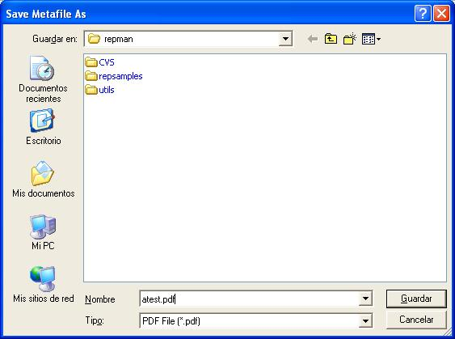

After testing datasets and connections you can drop easily fields to report sections.
Select the data page beside the structure page of the report, you will see your dataset and other variables you can insert in your report, other useful informatino like data types is also available.
You can drag any field and drop it in the detail section.
You can click the component see and change the properties.

You can now preview the report, and navigate throught pages.

Close the window and drop some labels, to drop a label click the label button in the palette in the top of the window, then click and extend the label in the detail section.

We wil add a rectangle, drop a rectangle, clic in it, clic To Back Button and position and size it like this figure:

To adjust detail size click the detail item in the design tree or the surface of the Detail section, then alter Height property to 2 (cms).
The preview should show something like this:

In the preview window you can click save button to export the result to Report Metafile, Adobe PDF format, text file etc..
